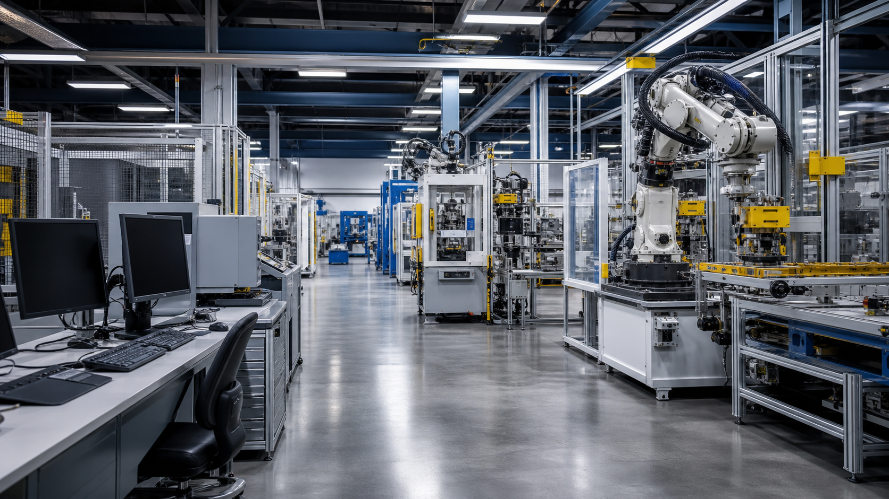

一、雙引擎換機潮：Win10 EOS × AI PC
2025 年 10 月，微軟正式終止 Windows 10 的免費安全性更新。這不是普通的版本迭代——全球仍有超過 60% 的商用 PC 運行 Win10，其中大型企業 45%、中小企業 37% 計畫在 2024-2025 完成換機。這波動能將延續到 2026，甚至更久。
與此同時，AI PC 正在改寫硬體生命週期。2024 年 AI PC 滲透率僅 3%，但 2026 年預計將成為主流。NPU（神經網路處理器）架構快速迭代，Copilot+ PC 的硬體需求一年一變。企業與其買斷後看著設備折舊落伍，不如以租賃模式「用多少、付多少、到期無痛升級」。
二、DaaS 市場有多大？從全球到台灣
DaaS（Device as a Service，設備即服務）不再只是「電腦用租的」，而是整合硬體、軟體、資安、維修、回收的一站式 IT 訂閱制。全球 DaaS 市場規模：
換算到台灣：10 人以上中小企業約 40-50 萬家，平均每家 15-30 台裝置，以月租 NT$1,000-2,200/台計算——滲透率只要達到 5-8%，年市場規模即可達數十至百億台幣。而且這還只是硬體月費，若捆綁資安管理（EDR）、雲端桌面（VDI）、生產力工具，客單價可以再拉高 30-50%。
三、誰最需要？目標受眾畫像
不是所有企業都適合電腦租賃。最理想的早期目標受眾具備以下特徵：
- 製造業 SME（竹科、中科、南科周邊工業區）：需要 CAD/ERP 工作站，IT 人力不足，設備故障直接影響產線
- 專業服務業（設計、工程、顧問公司）：AI 工具需求高，硬體迭代壓力大，與其每年換機不如月租訂閱
- 出口型企業：ESG 合規壓力下，租賃設備便於回收再製、符合碳排申報，比買斷更有利於綠色認證
- 50-200 人規模優先：有 IT 需求但無專職 IT 團隊，付得起月費但不願一次砸數百萬買設備
這群客戶的共同痛點：不想管 IT、不想一次花大錢、不想設備落伍沒人處理。DaaS 正是為他們設計的。
四、競爭版圖：誰在做什麼？
台灣企業電腦租賃市場已經有玩家在布局，各自切入點不同：
| 類型 | 代表廠商 | 特色與定位 |
|---|---|---|
| 專業租賃龍頭 | 中租控股 | 規模最大、利率最優、品牌彈性高；純融資為主，維運需另搭 SI |
| 原廠金融 | Dell Financial、HPFS、Lenovo Financial | 原廠保固最順，但綁單一品牌，缺乏跨品牌彈性 |
| SI + 完整 DaaS | 精誠資訊 | 一站式最完整（硬體+MDM+資安+維修+回收），價格最高 |
| 本土品牌方案 | Acer、ASUS | 性價比高、在地支援快，DaaS 方案愈趨積極 |
| 新興 DaaS 業者 | 專業 IT 租賃 + 循環經濟公司 | 彈性高但品牌知名度與資本規模較小 |
市場機會在於：目前沒有一家做到「夠台、夠簡單、夠在地」。國際大廠語言隔閡、原廠金融品牌綁定、龍頭廠商只管融資不管維運——誰能補上這個缺口，誰就能定義市場。
五、不只省錢，更是策略選擇
企業電腦租賃不只是財務上的「月付代替買斷」，更是回應幾個大趨勢的策略選項：
📊 OpEx 化趨勢
企業追求可預測月費、現金流優先。每月固定支出比一次性數百萬採購更容易通過 CFO 審核。租賃讓 IT 支出從資本支出（CapEx）轉為營業支出（OpEx），改善財務彈性。
🌱 ESG 與循環經濟
租賃模式設備到期回收、再製、延長生命週期，減少電子廢棄物。對需要碳排申報的出口型企業，這是具體可行的綠色轉型方案。
🏛️ 政府政策助攻
經濟部「數位轉型補助」與「綠色轉型計畫」可與 DaaS 方案結合申請，降低企業導入門檻。

六、成功關鍵：五個致勝要素
- 在地化服務 — 快速到府維修、中文技術支援、熟悉在地產業生態，是對抗國際大廠的最大差異化優勢
- 產業垂直方案 — 製造業 rugged device + MES 整合、設計公司高階工作站套餐，一套方案打一個產業
- 供應鏈優勢 — 台灣是 PC OEM/ODM 重鎮（廣達、仁寶、緯創），採購成本與彈性優於其他市場
- 風險控管 — 與銀行或保險公司合作分攤信用風險，用裝置管理軟體（MDM）降低壞帳與設備遺失
- 聰明起步 — 先與 HP、Dell、Lenovo DaaS 方案成為認證夥伴，或與中租策略聯盟，不求從零自建
💡 一句話總結
台灣 SME DaaS 正處於起飛前夕。AI PC 換機潮 + 數位轉型政策 + 現金流壓力 = 完美風口。誰能把服務做「夠台、夠簡單、夠安心」，誰就能吃下這塊百億藍海。